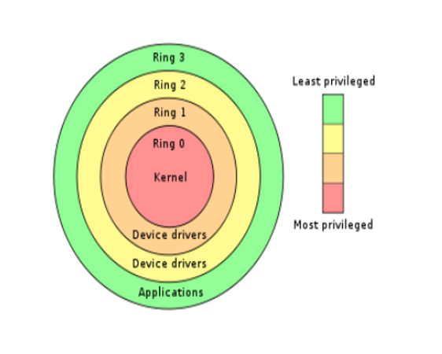

# 段权限检测
# CPU 权限等级划分

CPU 一共四个等级. ring3 - ring 0 而操作系统只使用了 ring3 与 ring0 所以 ring3 就是应用程序，ring0 就是内核程序。
应用程序不可以执行特权指令，内核程序可以执行特权指令。
# CPL RPL DPL 介绍
描述符特权级 (DPL) 域 ——(段描述符的第二个双字的 bit 13 和 bit 14) 确定该段的特权级。
请求特权级 (RPL) 域 ——(段选择符的 bit 0 和 bit 1) 确定一个段选择符的请求特权级。
当前特权级 (CPL) 域 ——(CS 段寄存器的 bit 0 和 bit 1) 指明当前运行的进程的特权级。术语当前特权级 (CPL) 就是指该域的设置。
- 当前特权级（CPL）
描述：
段寄存器 CS 的后两位比特位称为当前特权级
注意：段选择子 SS 和 CS 的后两位比特位相同
如：
→ CS = 0x001B
→ 0x001B = 二进制:0000 0000 0001 1011
→ 二进制:11 = 十进制:3
→ 因此：当前进程处于3环
- 请求特权级（RPL）
描述：
RPL 是段选择子结构中的一部分
RPL 是针对段选择子而言的，每个段的选择子都有自己的 RPL
RPL 表示用什么权限去访问一个段
例：
MOV AX,0008
MOV DS,AX
与
MOV AX,000B
MOV DS,AX
指向的是同一个段描述符，但RPL不同
- 3）数据段的权限检查
检查：CPL<= DPL 并且 RPL<= DPL（数值上的比较）
例：
当CPL = 0时执行以下指令：
MOV AX,000B // RPL=3，请求权限为3
MOV DS,AX // 假设ax指向的段描述符的DPL=0
上述指令虽然满足了CPL<=DPL，但RPL>DPL，因此执行失败
注意：代码段和系统端描述符的检查方式不一样
既然已经有 CPL（当前特权级别）了，为什么还要有 RPL（请求特权级别）呢？
原因：我们本可以用 “读写” 的权限去打开一个文件，但为了避免出错，有些时候我们使用 “只读” 的权限去打开
# Reference
https://blog.csdn.net/qq_41988448/article/details/102563325